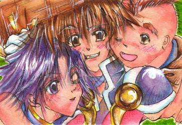
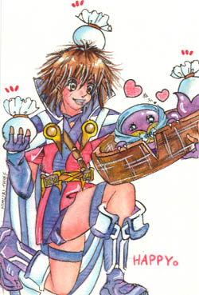

| 『风来同人画集』>>>>> 【Page1】
[Page2] |
|
|
▲SFC版的【シレン・ペケジ・おo】三人组，西林的背上竟然有桌子山的纹身，强！おo的右手好别扭呀，而且，那个黄金神鸟被画成了老母鸡……晕死！
▲此画刊于【64DREAM/2000年3月号】 |
▲SFC版的【シレン・コッパ】，一看背景就知道是竹林之村了，这是竹林乱舞！个人比较喜欢这幅画。
▲此画刊于【64DREAM/2000年10月号】 |
|
 |
▲N64版的【シレン・コッパ・アスカ・マ`モ】，岁末大扫除，西林和柯帕都被塞进マ`モ里了，飞鸟成了清洁女工……
▲此画刊于【64DREAM/2001年1月号】 |
▲GB2的【シレン・おo・ペケジ】三人组，他们的样子好像很亲密无间啊。
▲此画刊于【Nintendo DREAM/2001年10月号】 |
|
|
▲冬天里的西林，背景的冷酷和前景的可爱形成鲜明对比。
P.S.：背景那个样子真像剑心啊…… |
▲SFC版的ナオキ，那个动作好像耍杂技…… |
|
|
▲带着爽朗笑容的飞鸟姐姐。
▲此画刊于【64+アドバンス/2001年7月号】 |
▲忧伤的アテカ，担心城主和村人安危的心情表露无遗……
▲此画刊于【64+アドバンス/2001年8月号】 |
|
 |
▲GB2里的サチ，你以为她是在扮鬼脸吗？其实她是在尝料理是否合口味了。
▲此画刊于【ファミ通キュ`ブ/2002年3月号】 |
▲【シレン・ぬすっトド】，西林与盗贼合作进行泥棒，赚了好多钱，乐死了。
▲此画刊于【公式ファンブック ビックリの2】 |
|
|
▲GB2的【シレン・店主】，店主的头好卡哇依……
▲此画刊于【Nintendo DREAM/2002年6月号】 |
▲N64版的【シレン・コッパ】，还处在童年时期的西林。
▲此画刊于【NintendoKids/2001年6月号】 |
|
|
| ▲SFC版的おo，手上那张是什么东东？ |
▲N64版的キララ，服装过于暴露了…… |
|
|
| ▲N64版的【シレン・コッパ】，柯帕轻抚西林的鼻子，表现出一种亲昵感。 |
▲N64版的サスミ，个人最不喜欢这张，好像鬼一样……吓人！ |
| 【Page1】 [Page2] |